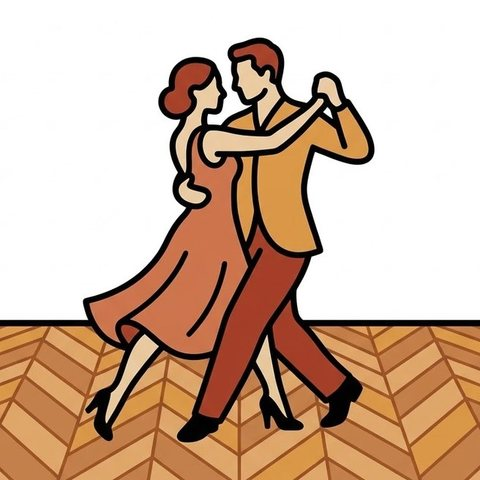
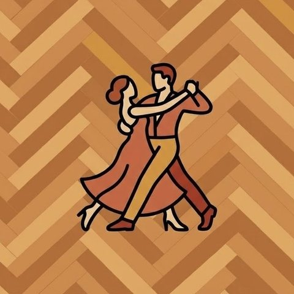
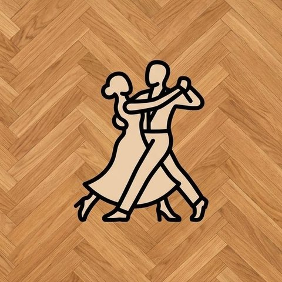

Accueil – Les amis du bal à Papa
-

Agenda du bal
Consultez l'intégralité de notre agenda avec nos prochains bals réguliers et évènements. Lien direct vers l'agenda. Nos calendriers des cours peuvent être consultés via la rubrique Agendas.
Lire la suite : agenda du bal -

Stages et cours
Retrouvez-nous sur Chambéry pour nos cours de danse de bal : paso doble, tango, valse, rock, cha-cha, fox-trot…
Lire la suite : stages et cours -

Les grands évènements
Ci-dessous, retrouvez les dernières actualités et événements principaux. Concernant la programmation plus vaste, vous trouverez toutes nos dates sur l'agenda.
Lire la suite : les grands évènements
Le bal à Papa
Les amis du bal à Papa est une association loi 1901 qui a pour objectif de maintenir et promouvoir les danses de bal qui font partie de la culture française.
Tout au long de l'année, nous organisons à Chambéry des après-midis dansants ouverts à tous : danses à deux et danse en ligne, dans une ambiance conviviale. Un agenda trimestriel est distribué à chaque bal.
Nos salles à Chambéry
- Le Cœur de Mérande
- Le Scarabée
- La Bisseraine
La salle de chaque bal est indiquée dans l'agenda. Pour l'adresse exacte, contactez-nous.
Infos pratiques
- Horaires
- 15 h – 18 h
- Billetterie
- Ouverture à 14 h 20
- Entrée
- 10 €
- Adhérents
- 45 € pour l'année
- Buvette
- Dès 14 h 20 – pâtisseries à partir de 16 h